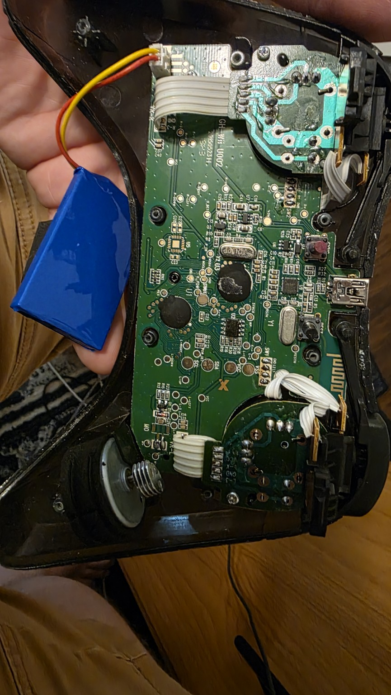
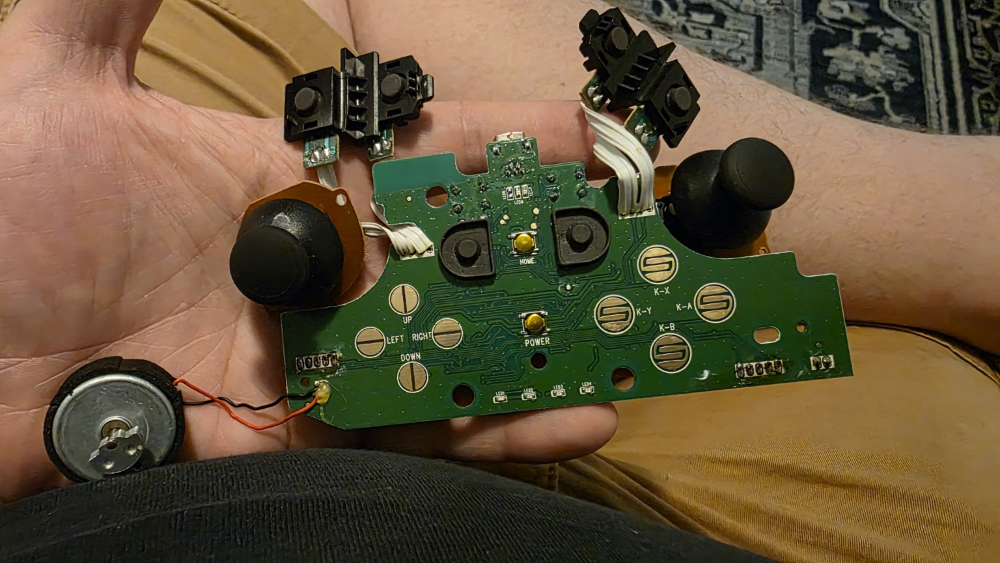
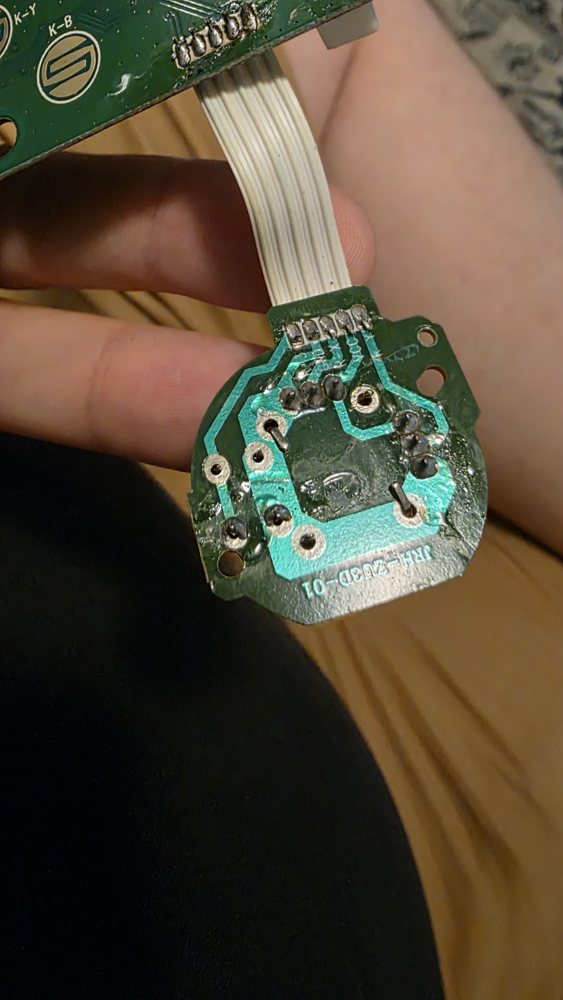
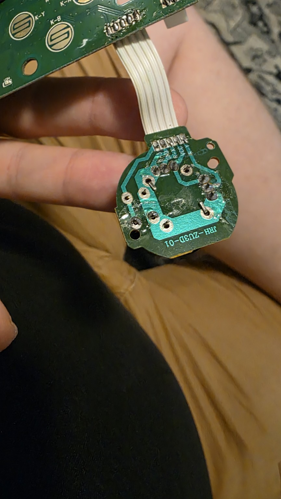
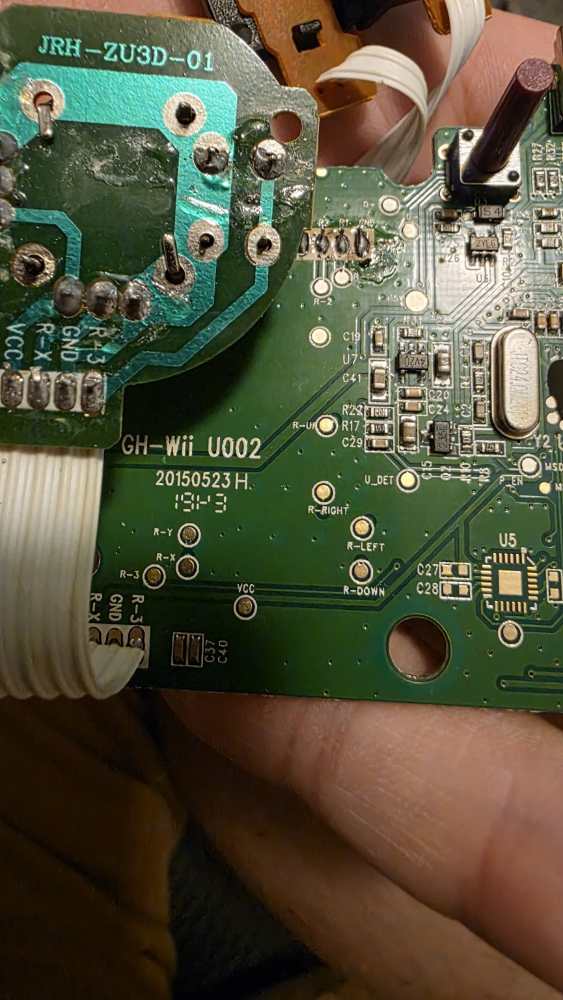
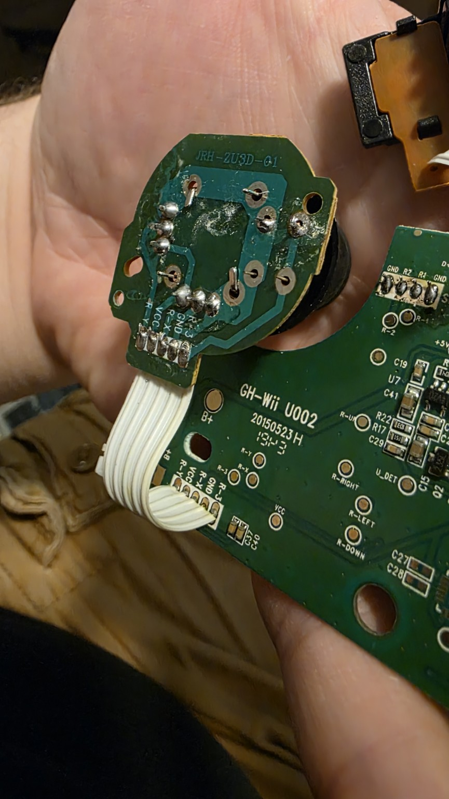
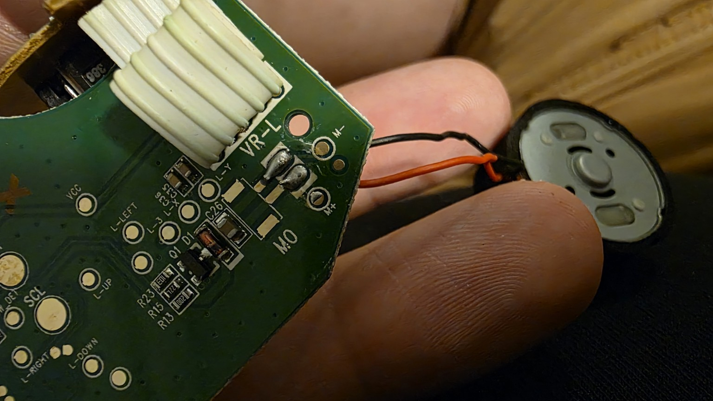
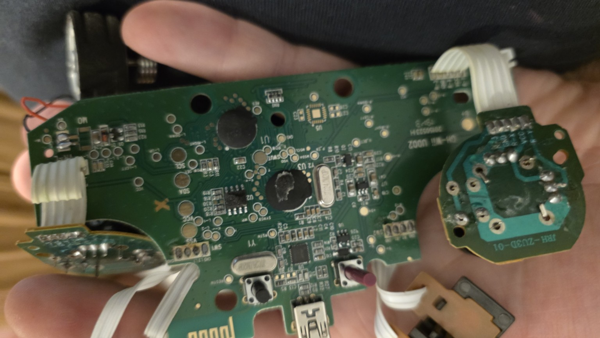
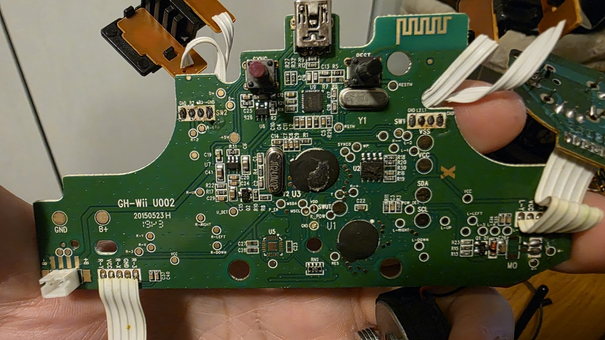

3079.jpg
Original shell interior, main PCB, battery pack and joystick assemblies
Sanitized photo / unscaled

3080.jpg
Button-contact side overview with joystick and shoulder modules still on ribbons
Sanitized photo / unscaled

3081.jpg
Button-contact side close overview; reference orientation for first measurements: USB at top
Sanitized photo / unscaled

3082.jpg
Joystick daughterboard solder side, ribbon and mounting-hole close-up
Sanitized photo / unscaled

3083.jpg
Joystick daughterboard alternate view with labeled ribbon connections
Sanitized photo / unscaled

3084.jpg
Main PCB identity and right-stick labeled pad region; daughterboard close-up
Sanitized photo / unscaled

3085.jpg
Joystick daughterboard shape, holes and ribbon reach reference
Sanitized photo / unscaled

3086.jpg
Main-board left-stick ribbon termination, motor wires and board-edge detail
Sanitized photo / unscaled

3087.jpg
Main PCB rear overview, rotated; daughterboards and ribbons visible
Sanitized photo / unscaled

3089.jpg
Sharp main-PCB rear overview showing GH-Wii U002 identity and labeled test pads
Sanitized photo / unscaled